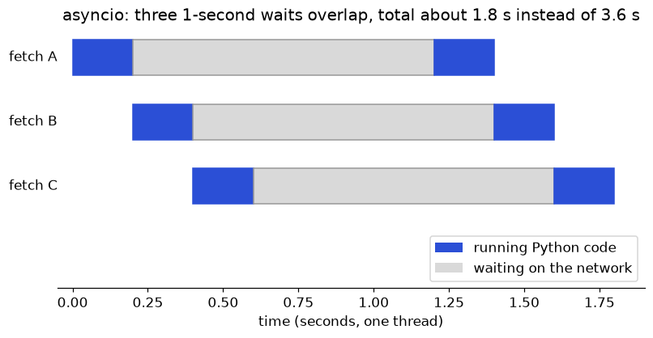
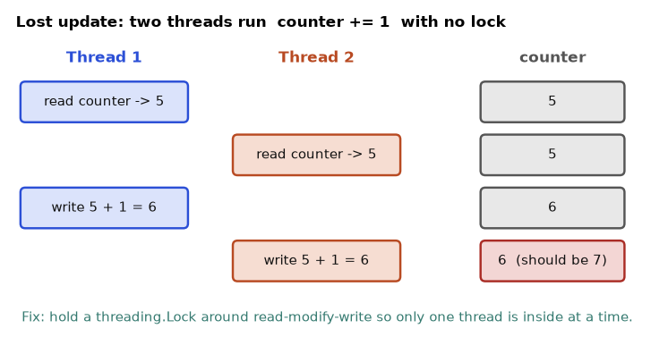

Your script takes 40 minutes to call 2,000 URLs, and a data job that should finish overnight is still running at breakfast. Every programmer learns the golden rule: do not guess where the time goes, measure it. In this chapter you will learn to measure Python code (timeit, cProfile, tracemalloc), to understand why Python threads do not speed up some jobs (the GIL), and to choose between threads, processes and asyncio. You will also see why a loop in pure Python is slow, and connect all this to Little's law, a formula from queueing theory. All the timings below are real runs on one laptop (12 CPU cores, Python 3.14). Your numbers will differ, but the shapes will match.
A note on what was run. Only the Python 3.14 standard library was available, with no network.
numpy,pandas,numba,line_profilerandmemory_profilerwere not run here. Their snippets are standard usage and marked as such.
timeit times small snippets, cProfile shows time per function, and tracemalloc tracks memory use.ncalls is how many times it ran.timeit runs a snippet many times and reports the total, which smooths out noise. Use it to compare two ways of doing the same small job.
Problem 11.1.1 Compare four ways to compute the sum of squares of 1,000,000 numbers. Predict first: which is fastest, a plain for loop or a list comprehension?
| Step 1 | Write each version as a string. Run each 3 times and divide by 3. |
|---|---|
| Step 2 | Print the average in milliseconds. |
import timeit
N=1_000_000
t1=timeit.timeit("s=0\nfor i in range(N): s+=i*i", globals=globals(), number=3)/3
t2=timeit.timeit("sum([i*i for i in range(N)])", globals=globals(), number=3)/3
t3=timeit.timeit("sum(i*i for i in range(N))", globals=globals(), number=3)/3
t4=timeit.timeit("sum(map(int.__mul__, r, r))", setup="r=range(N)", globals=globals(), number=3)/3
for n,t in [("for loop",t1),("list comp + sum",t2),("generator + sum",t3),("map(int.__mul__)",t4)]:
print(f"{n:<20}{t*1000:8.1f} ms")for loop 27.2 ms
list comp + sum 26.3 ms
generator + sum 28.8 ms
map(int.__mul__) 45.7 msmap(int.__mul__) was the slowest at 45.7 ms.Problem 11.1.2 Is x in my_list slow for a list of 100,000 numbers? Compare with a set.
| Step 1 | Build a list and a set of range(100000). |
|---|---|
| Step 2 | Search for 99999, the worst case for a list, 200 times each. |
import timeit
print(timeit.timeit("99999 in L", setup="L=list(range(100000))", number=200), "s list")
print(timeit.timeit("99999 in S", setup="S=set(range(100000))", number=200), "s set")0.08791520900012983 s list
4.417000127432402e-06 s setcProfile records every function call. You sort the report by cumulative time (time in the function including the functions it calls) or tottime (time in the function itself only).
Problem 11.1.3 Profile a main() that calls slow_sum(300_000) and a recursive fib(22). Which is the hot spot?
| Step 1 | Create a Profile, enable it, run main, disable it. |
|---|---|
| Step 2 | Print the top 5 rows sorted by cumulative time. |
import cProfile, pstats, io
def slow_sum(n):
return sum([i*i for i in range(n)])
def fib(n):
return n if n < 2 else fib(n-1)+fib(n-2)
def main():
slow_sum(300_000)
fib(22)
pr = cProfile.Profile(); pr.enable(); main(); pr.disable()
s = io.StringIO()
pstats.Stats(pr, stream=s).sort_stats("cumulative").print_stats(5)
print(s.getvalue()) 57317 function calls (5 primitive calls) in 0.014 seconds
Ordered by: cumulative time
ncalls tottime percall cumtime percall filename:lineno(function)
1 0.000 0.000 0.014 0.014 /private/tmp/w11/b.py:6(main)
1 0.006 0.006 0.008 0.008 /private/tmp/w11/b.py:2(slow_sum)
57313/1 0.006 0.000 0.006 0.006 /private/tmp/w11/b.py:4(fib)
1 0.002 0.000 0.002 0.002 {built-in method builtins.sum}
1 0.000 0.000 0.000 0.000 {method 'disable' of '_lsprof.Profiler' objects}How to read it: ncalls 57313/1 means fib was called 57,313 times in total, of which 1 was the outer call (the rest are recursive). tottime is time inside that function only. cumtime includes callers' children. main has cumulative 0.014 s and almost 0 tottime, so it is just a coordinator.
slow_sum (0.008 s cumulative) and fib (0.006 s) share the time. The profile also shows that fib(22) made 57,313 calls to compute one number, a clue that caching (functools.lru_cache, Chapter 4) would help.main's cumulative time. Time adds up.From the command line you can profile a whole script: python3 -m cProfile -s cumulative myscript.py. The tool line_profiler (not run here) goes deeper: you decorate a function with @profile, run kernprof -l -v script.py, and it shows time per line.
Problem 11.1.4 How much memory does a list of 1,000,000 integers use, and how much does a generator that sums the same numbers use? Predict: is it more than 10 MB?
| Step 1 | Start tracemalloc. Build the list, read current memory. |
|---|---|
| Step 2 | Sum a generator, and read the peak above the list. |
| Step 3 | Compare sys.getsizeof for both objects. |
import tracemalloc, sys
tracemalloc.start()
data = [i for i in range(1_000_000)]
cur, peak = tracemalloc.get_traced_memory()
print(f"list of 1M ints: current {cur/1e6:.1f} MB")
tracemalloc.reset_peak()
gen = (i for i in range(1_000_000))
total = sum(gen)
cur2, peak2 = tracemalloc.get_traced_memory()
print(f"generator sum peak extra: {(peak2-cur)/1e6:.4f} MB")
print(sys.getsizeof(data), sys.getsizeof(gen))
snap = tracemalloc.take_snapshot()
for st in snap.statistics("lineno")[:1]: print(st)list of 1M ints: current 40.4 MB
generator sum peak extra: 0.0006 MB
8448728 200
/private/tmp/w11/d.py:3: size=38.6 MiB, count=999731, average=40 Bsys.getsizeof(data) is 8.4 MB, which counts only the list's 8-byte pointers (1,000,000 × 8). Each integer object is a separate object of about 32 bytes, so 8 + 32 = 40 bytes per item, matching "average=40 B" and 40 MB total. getsizeof does not count the objects inside, so always trust tracemalloc for the full picture.memory_profiler (not run here) gives memory per line with @profile and python -m memory_profiler script.py. "It is slow"
|
v
timeit / wall clock --> how slow? (a number, repeatable)
|
v
cProfile --> which function? (tottime, cumtime, ncalls)
|
v
line_profiler --> which line?
|
v
fix ONE thing, measure again, keep tests green (Chapter 10)apply that takes 2 hours is usually one hot function. Profile before rewriting.MemoryError) are found with tracemalloc or by switching to generators and chunked reads.getsizeof as the real size. It counts only the container, not its contents.Check yourself
tottime and cumtime? Answer: tottime is time inside the function only; cumtime also includes the functions it calls.x in set beat x in list by about 20,000 times in our test? Answer: a set uses a hash to jump to the item; a list scans every item.tracemalloc and not sys.getsizeof for memory? Answer: getsizeof ignores the objects inside a container.The Global Interpreter Lock (GIL) is a lock inside the standard Python interpreter (CPython). Only one thread at a time can run Python bytecode (the low-level instructions Python code is turned into). Why does it exist? It makes memory management (reference counting, Chapter 1) simple and fast for one thread, and it protects Python's own data structures. The price is that threads cannot run Python code in parallel on several CPU cores.
Two key facts follow:
Version note: recent Python versions offer an optional free-threaded build with no GIL (check sys._is_gil_enabled()). It is not the default in standard installs and library support is still growing, so in this chapter we use the normal build. On this machine the check prints True, meaning the GIL is on.
| Term | Meaning | Where it appears in the job |
|---|---|---|
| Thread | A path of execution inside one process; shares memory with other threads | Downloading many files at once |
| Process | A separate program instance with its own memory and its own GIL | Parallel CPU work like feature building |
| I/O-bound | Time is spent waiting for network, disk or database | API calls, S3 reads, SQL queries |
| CPU-bound | Time is spent computing | Parsing, simulation, training loops in pure Python |
| Race condition | Wrong result because threads touched shared data in a bad order | Shared counters, shared lists |
Problem 11.2.1 Eight "requests" each take 0.5 s of waiting (time.sleep). Four CPU jobs each loop 30 million times. Compare sequential, threads and processes. Predict first: will 4 threads make the CPU jobs about 4 times faster?
| Step 1 | For I/O: run 8 sleeps in a loop, then in a ThreadPoolExecutor(8). |
|---|---|
| Step 2 | For CPU: run 4 loops in sequence, then in a ThreadPoolExecutor(4), then in a ProcessPoolExecutor(4). |
| Step 3 | Time each with time.perf_counter(). |
import time
from concurrent.futures import ThreadPoolExecutor, ProcessPoolExecutor
def io_task(_):
time.sleep(0.5)
def cpu_task(n):
s = 0
for i in range(n):
s += i*i
return s
def timed(label, f):
t=time.perf_counter(); f(); print(f"{label:<28}{time.perf_counter()-t:6.2f} s")
N=30_000_000
if __name__ == "__main__":
timed("IO x8 sequential", lambda: [io_task(0) for _ in range(8)])
def tp():
with ThreadPoolExecutor(8) as ex: list(ex.map(io_task, range(8)))
timed("IO x8 threads(8)", tp)
timed("CPU x4 sequential", lambda: [cpu_task(N) for _ in range(4)])
def tc():
with ThreadPoolExecutor(4) as ex: list(ex.map(cpu_task,[N]*4))
timed("CPU x4 threads(4)", tc)
def pc():
with ProcessPoolExecutor(4) as ex: list(ex.map(cpu_task,[N]*4))
timed("CPU x4 processes(4)", pc)Real output (a separate run added the asyncio line, shown in 11.3):
IO x8 sequential 4.03 s
IO x8 threads(8) 0.51 s
CPU x4 sequential 3.18 s
CPU x4 threads(4) 3.15 s
CPU x4 processes(4) 1.30 sHere is the typical wrong version with processes, and its error message:
from concurrent.futures import ProcessPoolExecutor
with ProcessPoolExecutor(2) as ex:
print(list(ex.map(lambda x: x*2, [1,2])))PicklingError - Can't pickle <function <lambda> at 0x1039e6770>: it's not found as __mProcesses need to send the function to another process by pickling (turning an object into bytes). A lambda has no importable name, so it fails. The fix is a normal named function defined at the top level of a module. Also, on macOS and Windows the code that starts processes must sit under if __name__ == "__main__":, because each child re-imports the file.
Threads share memory. If two threads update the same variable, results can go wrong. This code does "read, wait a tiny moment, write", which gives other threads the chance to run in the middle:
import threading, time
counter = 0
lock = threading.Lock()
def unsafe(n):
global counter
for _ in range(n):
v = counter
time.sleep(0) # gives other threads a chance to run mid-update
counter = v + 1
def safe(n):
global counter
for _ in range(n):
with lock:
v = counter
time.sleep(0)
counter = v + 1
def run(fn):
global counter
counter = 0
ts=[threading.Thread(target=fn,args=(2000,)) for _ in range(4)]
[t.start() for t in ts]; [t.join() for t in ts]
return counter
print("unsafe:", run(unsafe), "expected 8000")
print("safe: ", run(safe), "expected 8000")unsafe: 2015 expected 8000
safe: 8000 expected 8000Lock, the result is exactly 8000.time.sleep(0) and did a plain counter += 1 loop, the unsafe version gave the correct answer in my two runs on this Python version. That does not make it safe. Whether it fails depends on timing and on the Python version, which is exactly why race bugs are dangerous: they hide in testing and appear in production. Rule: when threads share data that changes, use a Lock or a queue.Queue (11.5). I/O-bound, 3 threads (one GIL) CPU-bound, 3 threads (one GIL)
T1: run..wait..........run T1: run run run ... (holds GIL)
T2: ..run..wait........run T2: wait ........... (no GIL)
T3: ....run..wait......run T3: wait ...........
waits overlap, total time shrinks no overlap of running, no speed-up
CPU-bound, 3 processes (3 GILs)
P1: run run run each process has its own GIL
P2: run run run and its own core: real parallelism
P3: run run runDataLoader workers are processes for exactly this GIL reason; parallel hyper-parameter runs.gunicorn/uvicorn workers) to use all cores.executor.map returns them in order) or use a queue.Check yourself
lambda fail in a process pool? Answer: pickling needs a function with an importable name; a lambda has none.concurrent.futures runs functions in a pool of threads or processes and returns their results. asyncio runs many tasks in one thread by switching between them while they wait, using async and await.asyncio: one worker that switches to another task whenever the current one has to wait. Threads are like hiring 20 waiters. asyncio is cheaper when you have thousands of tables, but the waiter must never freeze at one table.concurrent.futures gives one simple interface for thread pools and process pools. You learned ex.map(fn, items) above. For more control use submit, which returns a future (a promise of a result that is not ready yet), and as_completed, which hands you futures as they finish. Errors inside a job are raised when you ask for result().
Problem 11.3.1 Run 6 jobs in a pool of 4 threads. Job 3 fails on purpose. Collect all results and report the failure without crashing.
| Step 1 | Submit each job, and remember which item belongs to which future in a dictionary. |
|---|---|
| Step 2 | Loop over as_completed. Wrap f.result() in try/except. |
from concurrent.futures import ThreadPoolExecutor, as_completed
import time, random
def job(i):
time.sleep(random.random()*0.3)
if i == 3: raise ValueError("bad item 3")
return i*10
with ThreadPoolExecutor(4) as ex:
futs = {ex.submit(job, i): i for i in range(6)}
for f in as_completed(futs):
i = futs[f]
try: print(i, "->", f.result())
except ValueError as e: print(i, "failed:", e)Real output, sorted so the order is stable (the real arrival order changes each run):
0 -> 0
1 -> 10
2 -> 20
3 failed: bad item 3
4 -> 40
5 -> 50ex.map.A coroutine is a function defined with async def. Calling it does not run it; it gives an object that the event loop (the manager that switches between tasks) runs. Inside a coroutine, await something means "I will wait here; run another task meanwhile". asyncio.gather runs many coroutines together, and asyncio.run(main()) starts the loop.
Problem 11.3.2 Eight tasks each wait 0.5 s, using asyncio. How long in total? Then limit concurrency to 5 at a time for 20 tasks of 0.2 s, and add a timeout.
| Step 1 | gather 8 tasks of await asyncio.sleep(0.5). Total should be about 0.5 s. |
|---|---|
| Step 2 | Use asyncio.Semaphore(5), a gate that lets only 5 tasks inside at once. 20 tasks ÷ 5 per round = 4 rounds × 0.2 s = 0.8 s. |
| Step 3 | Use asyncio.timeout(0.1) around a 1 s wait. |
import asyncio, time
async def fetch(i, sem):
async with sem:
await asyncio.sleep(0.2)
return i*i
async def main():
sem = asyncio.Semaphore(5)
t=time.perf_counter()
res = await asyncio.gather(*(fetch(i, sem) for i in range(20)))
print(res[:5], f"{time.perf_counter()-t:.2f}s")
try:
async with asyncio.timeout(0.1):
await asyncio.sleep(1)
except TimeoutError:
print("timed out")
asyncio.run(main())[0, 1, 4, 9, 16] 0.80s
timed outThe 8-task asyncio run from the experiment script printed IO x8 asyncio 0.50 s, the same as 8 threads.
Predict: five tasks, each doing 0.2 s of waiting. Which version finishes in about 0.2 s?
import asyncio, time
async def bad(i):
time.sleep(0.2) # blocks the whole event loop
return i
async def good(i):
await asyncio.sleep(0.2)
return i
async def main():
t=time.perf_counter(); await asyncio.gather(*(bad(i) for i in range(5))); print(f"time.sleep in async : {time.perf_counter()-t:.2f}s")
t=time.perf_counter(); await asyncio.gather(*(good(i) for i in range(5))); print(f"await asyncio.sleep : {time.perf_counter()-t:.2f}s")
t=time.perf_counter(); await asyncio.gather(*(asyncio.to_thread(time.sleep,0.2) for i in range(5))); print(f"to_thread(time.sleep): {time.perf_counter()-t:.2f}s")
asyncio.run(main())time.sleep in async : 1.02s
await asyncio.sleep : 0.20s
to_thread(time.sleep): 0.21stime.sleep inside a coroutine froze the loop, so the five tasks ran one after another (5 × 0.2 = 1.0 s). await asyncio.sleep took 0.20 s. If you must call a blocking function (an old library without async support), asyncio.to_thread runs it in a thread and gives 0.21 s.| Situation | Tool | Why |
|---|---|---|
| 10 to 200 API calls or files, simple code | ThreadPoolExecutor | Easiest; works with normal libraries |
Thousands of connections, async libraries (httpx.AsyncClient, FastAPI) | asyncio | Very cheap tasks |
| CPU-heavy pure Python on many cores | ProcessPoolExecutor / multiprocessing | Separate GILs |
| Heavy NumPy/pandas maths | Vectorize first (11.4) | Fast C code beats any pool |
asyncio event loop (one thread)
task A: start -> await(wait) .............. -> finish
task B: start -> await(wait) ..... -> finish
task C: start -> await ... -> finish
The loop jumps to a ready task whenever another one awaits.
One blocking call (time.sleep) would freeze A, B and C together.async def run on an event loop, so blocking code inside them hurts all users.await. Calling fetch(1) without await gives a coroutine object and a warning that the coroutine "was never awaited". The code inside never ran.Check yourself
await do? Answer: pauses this coroutine and lets the event loop run other tasks until the awaited thing is ready.time.sleep in an async function take 1.0 s for five tasks? Answer: it blocked the event loop, so tasks ran one by one.Semaphore(5) do? Answer: lets at most five tasks be inside the guarded block at the same time.for loop is the thinking cashier: for each item it checks types, looks up names, and makes objects. Vectorization means handing the whole tray to fast compiled code (written in C), so the loop happens outside Python.A vectorized operation applies one operation to a whole array at once, for example "multiply every element by 2.5 and add 1". Libraries such as NumPy and pandas store numbers in compact blocks of memory with one type (not as separate Python objects), and run the loop in C. The idea is the same as a SQL query: say what you want on a whole column, not how to loop over rows.
NumPy is not installed here, but we can already show the "loop overhead" effect with built-in functions that run their loop in C.
Problem 11.4.1 Compute x * 2.5 + 1 for 1,000,000 numbers with a list comprehension and with an index loop. Then compute the mean with sum/len and with statistics.mean. Predict which of each pair is faster.
| Step 1 | Build xs = list(range(1_000_000)). |
|---|---|
| Step 2 | Time each approach once with time.perf_counter(). |
import time, statistics
n=1_000_000
xs=list(range(n))
t=time.perf_counter(); ys=[x*2.5+1 for x in xs]; print(f"list comp {time.perf_counter()-t:.3f}s")
t=time.perf_counter()
ys=[0.0]*n
for i in range(n): ys[i]=xs[i]*2.5+1
print(f"index loop {time.perf_counter()-t:.3f}s")
t=time.perf_counter(); statistics.mean(xs); print(f"statistics.mean {time.perf_counter()-t:.3f}s")
t=time.perf_counter(); sum(xs)/len(xs); print(f"sum/len {time.perf_counter()-t:.4f}s")list comp 0.026s
index loop 0.056s
statistics.mean 0.091s
sum/len 0.0032ssum(xs)/len(xs) (0.0032 s) was about 28 times faster than statistics.mean (0.091 s).0..999,999 is 499,999.5 for both. Speed differs because statistics.mean does careful exact arithmetic to avoid rounding errors, so it is built for accuracy, not speed. sum runs its loop in C.sum, min, max, sorted, str.join) and comprehensions before hand-written loops, and compare cost of safety against speed. For big numeric data, NumPy goes much further.# not run here: needs numpy and pandas
import numpy as np
x = np.arange(1_000_000)
y = x * 2.5 + 1 # whole array, no Python loop
print(y.mean())
import pandas as pd
df = pd.DataFrame({"qty": [2, 5, 1], "price": [100.0, 40.0, 250.0]})
df["total"] = df["qty"] * df["price"] # vectorized column maths
# slow pattern to avoid:
# df["total"] = df.apply(lambda r: r["qty"] * r["price"], axis=1)On typical machines, vectorized NumPy code is often tens to hundreds of times faster than a pure-Python loop for this kind of maths. I did not measure it here, so measure on your own data.
| Tool | What it does | When to consider it |
|---|---|---|
| Better algorithm / data structure | Set instead of list (11.1) | Always first |
lru_cache | Remembers results of repeated calls | Repeated expensive calls like fib |
| Numba (awareness) | @njit compiles numeric Python loops to machine code | A numeric loop you cannot vectorize |
| Cython (awareness) | Python-like code compiled to C | Library authors, hot loops needing C speed |
multiprocessing for pandas | Split data into chunks, run each in a process | CPU-heavy per-row Python functions |
| Polars, DuckDB (awareness) | Faster dataframe/SQL engines | Large local data |
Problem 11.4.2 Count the primes below 2,000,000 by splitting the range into 8 chunks of 250,000. Compare one process with a Pool(4).
| Step 1 | Write count_primes((lo, hi)) that trial-divides up to the square root. |
|---|---|
| Step 2 | Build the 8 chunks. Run map serially, then Pool(4).map. |
| Step 3 | Check both results match, and compute speed-up = serial time ÷ parallel time. |
import time
from multiprocessing import Pool
def count_primes(rng):
lo, hi = rng
c = 0
for n in range(lo, hi):
if n < 2: continue
for d in range(2, int(n**0.5)+1):
if n % d == 0: break
else: c += 1
return c
if __name__ == "__main__":
chunks = [(i*250_000, (i+1)*250_000) for i in range(8)]
t=time.perf_counter(); r1=sum(map(count_primes, chunks)); t1=time.perf_counter()-t
t=time.perf_counter()
with Pool(4) as p: r2=sum(p.map(count_primes, chunks))
t2=time.perf_counter()-t
print(r1, r2, f"serial {t1:.2f}s pool(4) {t2:.2f}s speedup {t1/t2:.1f}x")148933 148933 serial 3.75s pool(4) 1.49s speedup 2.5x Python loop: [x1] -> python -> [y1] one item at a time, overhead each time
[x2] -> python -> [y2]
Vectorized: [x1 x2 x3 x4 ... xN] --one call--> [y1 y2 y3 ... yN]
(tight loop in C over a compact block of memory)groupby, or SQL.apply(axis=1) with column maths.Check yourself
sum(xs)/len(xs) faster than statistics.mean(xs)? Answer: sum loops in C, while statistics.mean does exact, careful arithmetic in Python.A producer creates work items. A consumer (or worker) processes them. A queue sits between them. Python's queue.Queue is thread-safe: many threads can put and get without a lock of your own. With maxsize, put waits when the queue is full. That is back-pressure: the fast producer is forced to slow down to the speed of consumers instead of filling memory.
Problem 11.5.1 One producer puts 8 items into a queue with maxsize=3. Two consumers process each item in 10 ms. How do they stop?
| Step 1 | The producer puts items 0 to 7, then puts one None per consumer as a "stop" signal (a sentinel). |
|---|---|
| Step 2 | Each consumer loops while (item := q.get()) is not None. |
| Step 3 | Join all threads and print the sorted results. |
import queue, threading, time
q = queue.Queue(maxsize=3)
results = []
def producer():
for i in range(8):
q.put(i) # blocks when queue is full (back-pressure)
for _ in range(2): q.put(None)
def consumer(name):
while (item := q.get()) is not None:
time.sleep(0.01)
results.append((name, item))
ts=[threading.Thread(target=producer)]+[threading.Thread(target=consumer,args=(f"c{i}",)) for i in range(2)]
[t.start() for t in ts]; [t.join() for t in ts]
print(sorted(i for _,i in results))
print(len(results), "items processed")[0, 1, 2, 3, 4, 5, 6, 7]
8 items processedlist.append is safe here because it is a single step; for anything bigger, use a queue or a lock.)Little's law says: in a stable system, the average number of requests inside the system L equals the arrival rate (throughput) λ times the average time each spends inside W.
L = λ × W so λ = L / W (throughput = concurrency / latency)Check the units: L is a count of requests. λ is requests per second. W is seconds. Requests per second × seconds = requests. In a bank, L is the number of customers inside, W is the average time each spends there, and λ is how many customers arrive per minute.
Problem 11.5.2 Each "request" takes W = 0.05 s. Predict the throughput for concurrency 1, 5, 10 and 20, then measure with real threads for 2 seconds each.
| Formula | throughput λ = L / W |
|---|---|
| Plug in and compute | L=1: 1 ÷ 0.05 = 20 req/s. L=5: 5 ÷ 0.05 = 100. L=10: 10 ÷ 0.05 = 200. L=20: 20 ÷ 0.05 = 400. |
| Step 1 | Start L threads. Each loops: time.sleep(0.05), then add 1 to a locked counter, until the 2 s are over. |
| Step 2 | Divide the total count by elapsed time. |
import threading, time
LAT = 0.05 # each request takes 50 ms
DURATION = 2.0
def run(workers):
done = 0
lock = threading.Lock()
end = time.perf_counter() + DURATION
def w():
nonlocal done
while time.perf_counter() < end:
time.sleep(LAT)
with lock: done += 1
ts=[threading.Thread(target=w) for _ in range(workers)]
t0=time.perf_counter()
[t.start() for t in ts]; [t.join() for t in ts]
el=time.perf_counter()-t0
return done/el
for c in (1,5,10,20):
print(f"concurrency {c:>2}: measured {run(c):7.1f} req/s predicted {c/LAT:7.1f} req/s")concurrency 1: measured 18.6 req/s predicted 20.0 req/s
concurrency 5: measured 92.6 req/s predicted 100.0 req/s
concurrency 10: measured 185.3 req/s predicted 200.0 req/s
concurrency 20: measured 370.6 req/s predicted 400.0 req/stime.sleep(0.05) always takes a little longer than 50 ms, so the real W is about 0.054 s. Using that W, 20 ÷ 0.054 = 370 req/s, which matches.Use Little's law to size a worker pool: to process 200 requests per second when each takes 0.25 s, you need L = 200 × 0.25 = 50 concurrent workers (threads or async tasks), plus some safety margin.
producers --> [ queue (maxsize=3) ] --> consumer 1
(fast) [ x ][ x ][ x ] --> consumer 2
^
| queue full: put() waits (back-pressure)
Throughput vs concurrency (fixed latency, no resource limit):
req/s | /
| /
| / slope = 1 / W
| /
+-------------------- concurrencyL = λ × W.maxsize.q.get() and the program never exits. Use a sentinel per consumer, or q.task_done() with q.join().Check yourself
L = λ × W: requests in system = requests per second × seconds each.Section 11.3 introduced async and await. Real programs also need to stop work that takes too long, cap how much runs at once, pass work between tasks, and clean up after cancellation. Python 3.11 and newer give you clean tools for each. All blocks below were run.

await, then switches. The waits overlap, so the total is about 1.8 s, not 3.6 s.How to read it: blue means Python code is running and nothing else can. Grey means the task is parked waiting on the network and the loop is free to run another. Asyncio helps exactly when the grey is much longer than the blue.
A TaskGroup runs several tasks and waits for all of them when the async with block ends. If one task fails, the group cancels the others and raises an ExceptionGroup (section 6.6), which you catch with except*. This beats gather, which can leave siblings running after a failure. asyncio.timeout(seconds) cancels the block inside it and raises TimeoutError.
Problem 11.6.1 Run two fetches together and read both results. Then run a slow fetch beside one that fails, and show that the failure surfaces cleanly and the slow one does not keep running. Finally, put a 0.05 s limit on a 1 s wait.
| Step 1 | async with asyncio.TaskGroup() as tg: then tg.create_task(...) for each job. After the block, every task is done, so .result() is safe. |
|---|---|
| Step 2 | The failing task raises ValueError("bad") after 0.01 s. The group cancels the 0.5 s task and raises an ExceptionGroup. except* ValueError unpacks it. |
| Step 3 | async with asyncio.timeout(0.05): around await asyncio.sleep(1) raises TimeoutError after 0.05 s. |
import asyncio
async def fetch(name, delay, fail=False):
await asyncio.sleep(delay)
if fail:
raise ValueError(name)
return name
async def main():
async with asyncio.TaskGroup() as tg:
t1 = tg.create_task(fetch("a", 0.02))
t2 = tg.create_task(fetch("b", 0.01))
print(t1.result(), t2.result())
try:
async with asyncio.TaskGroup() as tg:
tg.create_task(fetch("ok", 0.5))
tg.create_task(fetch("bad", 0.01, fail=True))
except* ValueError as eg:
print("caught", [str(e) for e in eg.exceptions])
try:
async with asyncio.timeout(0.05):
await asyncio.sleep(1)
except TimeoutError:
print("timed out")
asyncio.run(main())a b
caught ['bad']
timed outtime.sleep(1) or requests.get(...) inside an async def. The whole loop freezes, and every other task stalls with it. Use await asyncio.sleep, an async client such as httpx (not run here), or hand the blocking call to a thread with await asyncio.to_thread(fn, ...).Starting 10,000 requests at once will get you banned or crash a server. A Semaphore(n) lets at most n tasks into a section at the same time. An asyncio.Queue with maxsize lets a producer and a consumer work at different speeds: when the queue is full, put waits, which is back-pressure from section 11.5. to_thread runs an ordinary blocking function in a worker thread and gives you an awaitable.
Problem 11.6.2 Run 10 jobs with at most 3 at a time and prove the limit held. Then pass 6 numbers through a queue of size 2 and square them. Then run a blocking sum in a thread.
| Limit | Each worker enters async with sem, raises a counter, sleeps, lowers it. The largest counter value seen is the peak. |
|---|---|
| Queue | The producer puts 0..5 and then None as a stop signal. The consumer loops until it sees None. |
| Thread | await asyncio.to_thread(sum, range(1000)) returns 499500 (the sum 0+1+...+999 is 999 x 1000 / 2). |
import asyncio
async def worker(i, sem, state):
async with sem:
state["now"] += 1
state["peak"] = max(state["peak"], state["now"])
await asyncio.sleep(0.01)
state["now"] -= 1
return i
async def producer(q, n):
for i in range(n):
await q.put(i)
await q.put(None)
async def consumer(q, out):
while (item := await q.get()) is not None:
out.append(item * item)
async def main():
sem = asyncio.Semaphore(3)
state = {"now": 0, "peak": 0}
res = await asyncio.gather(*(worker(i, sem, state) for i in range(10)))
print(res, "peak concurrency", state["peak"])
q = asyncio.Queue(maxsize=2)
out = []
await asyncio.gather(producer(q, 6), consumer(q, out))
print(out)
r = await asyncio.to_thread(sum, range(1000))
print("thread result", r)
asyncio.run(main())[0, 1, 2, 3, 4, 5, 6, 7, 8, 9] peak concurrency 3
[0, 1, 4, 9, 16, 25]
thread result 499500task.cancel() does not kill a task. It raises CancelledError inside the task at its next await, so finally blocks and except handlers can clean up. Always re-raise the error after cleanup, otherwise the task refuses to stop.
Problem 11.6.3 Start a task that waits 10 seconds, cancel it after 0.01 s, and show that its cleanup code ran.
| Step 1 | create_task starts the task. await asyncio.sleep(0.01) lets it begin. |
|---|---|
| Step 2 | t.cancel() schedules CancelledError inside the task. |
| Step 3 | The task prints, then raise re-raises. Awaiting the task from outside raises CancelledError there too, and t.cancelled() is True. |
import asyncio
async def forever():
try:
await asyncio.sleep(10)
except asyncio.CancelledError:
print("cleanup ran")
raise
async def main():
t = asyncio.create_task(forever())
await asyncio.sleep(0.01)
t.cancel()
try:
await t
except asyncio.CancelledError:
print("task cancelled:", t.cancelled())
asyncio.run(main())cleanup ran
task cancelled: TrueContextVar holds a value that is separate per task (and per thread), for example a request id for logging. Unlike a global, each task started with create_task gets a copy of the current context, so concurrent requests do not overwrite each other.create_task and not stored may be garbage collected before it finishes, because the loop keeps only a weak reference. A TaskGroup holds the references for you, another reason to prefer it.async with httpx.AsyncClient() as c: shared by all tasks.Threads share memory, and that is where the trouble starts. This section shows the lost update, the lock that cures it, a deadlock and its fix, then moves to memory: reference counting, cycles, weak references and the data structure that makes queues cheap.

How to read it: time runs downward. The danger is the gap between reading the counter and writing it back. A lock closes that gap by making the read-modify-write one indivisible step.
Problem 11.7.1 Four threads each add 1 to a shared counter 200,000 times. Compute the correct total, then run it with a lock, and without.
| Expected | 4 threads x 200,000 = 800,000. |
|---|---|
| With lock | with lock: around counter += 1 means only one thread is inside at a time. Result must be exactly 800,000. |
| Without lock | The result can be lower than 800,000, or happen to equal it. The only safe claim is "at most 800,000". |
import threading
def run(use_lock, n=200_000):
counter = {"v": 0}
lock = threading.Lock()
def work():
for _ in range(n):
if use_lock:
with lock:
counter["v"] += 1
else:
v = counter["v"]
counter["v"] = v + 1
ts = [threading.Thread(target=work) for _ in range(4)]
for t in ts: t.start()
for t in ts: t.join()
return counter["v"]
print(run(True))
print(run(False) <= 800_000)800000
TrueProblem 11.7.2 Thread 1 takes lock A then wants B. Thread 2 takes B then wants A. Reproduce the deadlock safely (with timeouts so the script ends) and then fix it.
| Cause | Each thread holds one lock and waits for the other: a cycle, so neither can ever proceed. |
|---|---|
| Safe repro | Use acquire(timeout=0.3) so a stuck thread gives up and logs it. Real code with a plain with would hang forever. |
| Fix | Every thread takes the locks in the same global order (A, then B). A cycle becomes impossible. |
import threading, time
a, b = threading.Lock(), threading.Lock()
log = []
def t1():
with a:
time.sleep(0.05)
if b.acquire(timeout=0.3):
b.release(); log.append("t1 got both")
else:
log.append("t1 gave up")
def t2():
with b:
time.sleep(0.05)
if a.acquire(timeout=0.3):
a.release(); log.append("t2 got both")
else:
log.append("t2 gave up")
x = [threading.Thread(target=t1), threading.Thread(target=t2)]
for t in x: t.start()
for t in x: t.join()
print(sorted(log))
def ordered(name):
with a:
with b:
log.append(name + " ordered ok")
log.clear()
y = [threading.Thread(target=ordered, args=(n,)) for n in ("t1", "t2")]
for t in y: t.start()
for t in y: t.join()
print(sorted(log))['t1 gave up', 't2 gave up']
['t1 ordered ok', 't2 ordered ok']CPython frees most objects the instant their reference count hits zero. Two objects that point at each other never reach zero, so a second mechanism, the cyclic garbage collector in the gc module, finds and frees such cycles. A weakref points at an object without keeping it alive, which makes it ideal for caches: when nothing else uses the value, the cache entry vanishes.
Problem 11.7.3 Build a two-object cycle, delete your names, and show it survives until gc.collect(). Then show a WeakValueDictionary cache that drops an entry on its own.
| Step 1 | Disable automatic collection so the demo is deterministic. a.other = b and b.other = a make a cycle. Keep a weak reference r to a. |
|---|---|
| Step 2 | del a, b: the objects are unreachable from your code, but each still has one reference from the other, so r() still returns a. |
| Step 3 | gc.collect() returns the number of objects it freed (more than 0), and r() becomes None. |
| Step 4 | A WeakValueDictionary holding an object has length 1. After del obj (the last strong reference) it has length 0. |
import gc, weakref
class Node:
def __init__(self): self.other = None
gc.disable()
a, b = Node(), Node()
a.other, b.other = b, a
r = weakref.ref(a)
del a, b
print("alive after del:", r() is not None)
print("collected objects > 0:", gc.collect() > 0)
print("alive after gc:", r() is not None)
gc.enable()
class Big: pass
cache = weakref.WeakValueDictionary()
obj = Big()
cache["k"] = obj
print(len(cache))
del obj
print(len(cache))alive after del: True
collected objects > 0: True
alive after gc: False
1
0list.pop(0) shifts every remaining item one place left, so it costs time proportional to the list length (O(n)). collections.deque.popleft() is O(1). Draining a queue of 50,000 items with list.pop(0) is therefore quadratic in total. The exact times depend on your machine, so the check below prints only whether the ratio exceeded 10x.
import timeit
n = 50_000
tl = timeit.timeit("l.pop(0)", setup=f"l=list(range({n}))", number=n-1)
td = timeit.timeit("d.popleft()", setup=f"from collections import deque; d=deque(range({n}))", number=n-1)
print("deque faster than list.pop(0) by more than 10x:", tl / td > 10)deque faster than list.pop(0) by more than 10x: Truecounter += 1 is still not atomic, so locks stay necessary.spawn starts a fresh interpreter and re-imports your module (the default on macOS and Windows, and from 3.14 on Linux), fork copies the parent. With spawn, guard code with if __name__ == "__main__": and remember that arguments and results must be picklable: lambdas and open files are not.functools.lru_cache(maxsize=...) or a weak-value dictionary.Problem 11.P.12 (warm-up) A function does 2 s of CPU-bound maths. Would 4 threads speed up 4 calls on a standard (GIL) build? What would?
Answer: No. Only one thread runs Python bytecode at a time, so the total stays near 8 s. Use ProcessPoolExecutor (about 2 s on 4 free cores) or a vectorised library. Threads help for waiting, not computing.
Problem 11.P.13 (build) Using asyncio.gather, run fetch("a", 0.03) and fetch("b", 0.01) from 11.6.1 and print the result list. In what order do the results appear?
import asyncio
async def fetch(name, delay):
await asyncio.sleep(delay)
return name
async def main():
print(await asyncio.gather(fetch("a", 0.03), fetch("b", 0.01)))
asyncio.run(main())['a', 'b']Answer: ['a', 'b']. gather returns results in the order you passed the awaitables, not the order they finished, even though b finished first.
Problem 11.P.14 (find the bug) A worker does except asyncio.CancelledError: print("bye") and never re-raises. What goes wrong?
Answer: The task swallows the cancellation and carries on (or finishes normally), so a TaskGroup or timeout that relies on cancelling it cannot stop it cleanly. Add raise after cleanup.
Problem 11.P.15 (stretch) Two threads each need locks A and B for a transfer between two accounts. Design a rule that prevents deadlock when the order of accounts varies by call. Rubric: (1) a total order on locks, (2) acquire in that order whatever the argument order, (3) one sentence on why a cycle then cannot form.
Answer: Sort the two accounts by a fixed key such as account id and always lock the lower id first: first, second = sorted([acc1, acc2], key=lambda a: a.id). A deadlock needs a cycle of waits, and a global order means a thread holding the higher lock never waits for a lower one.
Problem 11.P.16 (interview) Your service leaks memory slowly. Name three Python-specific causes and one tool for each.
Answer: (1) An unbounded cache or global list: find it with tracemalloc snapshots compared over time (section 11.1). (2) Reference cycles holding large objects with __del__ or long-lived callbacks: inspect with gc.get_objects() and gc.collect(), and break cycles with weakref. (3) Tasks or threads that are started and never finished or awaited: list them with asyncio.all_tasks() or threading.enumerate().
timeit for small comparisons, cProfile to find the hot spot, tracemalloc for memory.concurrent.futures is the easy interface to thread and process pools. Handle errors per future.asyncio runs many waiting tasks on one thread. Never block inside a coroutine; limit concurrency with a semaphore and add timeouts.apply(axis=1) on big data.L = λ × W links concurrency, latency and throughput, the same three numbers as in a bank queue: customers inside, time spent, arrival rate.| Need | Tool or formula |
|---|---|
| Compare two snippets | timeit.timeit(stmt, number=n) |
| Find the slow function | python3 -m cProfile -s cumulative script.py |
| Memory by line of code | tracemalloc.start(), take_snapshot().statistics("lineno") |
| Many waits (I/O) | ThreadPoolExecutor or asyncio.gather |
| Many calculations (CPU) | ProcessPoolExecutor or Pool.map |
| Limit parallel tasks | asyncio.Semaphore(n) |
| Call blocking code from async | await asyncio.to_thread(fn, ...) |
| Protect shared data | with threading.Lock(): or queue.Queue(maxsize=n) |
| Throughput | λ = L / W |
| Workers needed | L = λ × W |
Problem 11.P.1 (easy) A job has L = 10 concurrent workers and each request takes W = 0.2 s. What is the throughput?
Answer: λ = L ÷ W = 10 ÷ 0.2 = 50 requests per second.
Problem 11.P.2 (easy) You must download 100 files, each taking about 1 s of network wait, with a pool of 20 threads. About how long will it take?
Answer: 100 ÷ 20 = 5 rounds of 1 s each, about 5 s (compared with 100 s sequentially).
Problem 11.P.3 (easy, what is the output?) What does this print and why?
import asyncio
async def f():
return 5
print(f())Answer: it prints something like <coroutine object f at 0x...> (plus a warning that it was never awaited). Calling an async def function does not run it; you must await f() or use asyncio.run(f()).
Problem 11.P.4 (medium) Which tool for each: (a) 300 REST API calls, (b) a pure-Python loop over 10 big files on 8 cores, (c) summing a column of 10 million numbers?
Answer: (a) thread pool or asyncio with a limit, (b) process pool, (c) vectorized NumPy/pandas (or the built-in sum), no pool.
Problem 11.P.5 (medium, find the bug) This code uses a thread pool to speed up a CPU-heavy function and gets no gain. Why, and what is the fix?
with ThreadPoolExecutor(8) as ex:
results = list(ex.map(heavy_math, data))Answer: heavy_math is CPU-bound pure Python, so the GIL allows one thread at a time. Use ProcessPoolExecutor (with heavy_math defined at module top level), or vectorize it.
Problem 11.P.6 (medium, find the bug) An async function calls requests.get(url) (a blocking call) inside gather of 100 tasks. It takes 100 times one call. Fix it two ways.
Answer: the blocking call freezes the event loop, so the tasks run one by one. Fix 1: use an async client such as httpx.AsyncClient with await client.get(url). Fix 2: wrap the blocking call with await asyncio.to_thread(requests.get, url).
Problem 11.P.7 (medium) A profile shows fib with ncalls = 57313/1. What does this mean, and what is the cheapest fix?
Answer: 57,313 total calls of which 1 was the outer call, so the rest are recursive repeats of the same sub-problems. Add @functools.lru_cache(maxsize=None) so each value is computed once.
Problem 11.P.8 (medium) You need 500 requests per second. The average latency of your service is 0.04 s. How many concurrent workers do you need at minimum?
Answer: L = λ × W = 500 × 0.04 = 20 workers. Add margin (for example 30) because latency varies and the formula is for averages.
Problem 11.P.9 (hard, scenario) Your ETL reads 5,000 small JSON files from cloud storage and parses each (parsing takes 2 ms CPU, reading takes 100 ms wait). Design the concurrency.
Answer: reading is I/O-bound (100 ms wait against 2 ms CPU), so a thread pool of 50 to 100 workers works: 5,000 × 0.1 s ÷ 50 = 10 s of wall time. Parsing at 2 ms × 5,000 = 10 s CPU total, which fits in the same threads (the GIL allows it). Only if parsing were heavy would you add processes. Add retries and per-file error handling, and measure before tuning.
Problem 11.P.10 (hard, interview) Explain the GIL to a junior engineer in four sentences, and say when you would use threads, processes or asyncio.
Answer: The GIL is a lock in CPython that lets only one thread run Python bytecode at a time. Threads still help when they wait, because a waiting thread releases the lock. For CPU-bound work you use processes, each with its own GIL. I use threads for a moderate number of I/O tasks with normal libraries, asyncio for thousands of connections with async libraries, and processes (or vectorized code) for CPU-bound work.
Problem 11.P.11 (hard, interview) A teammate says "just add more threads, the API is slow." Using Little's law, explain what may go wrong.
Answer: more threads raise concurrency L, which raises throughput only while latency W stays flat. If the server is saturated, extra concurrency just raises W (requests queue), and throughput stays flat or drops, with more errors and timeouts. I would try 10, 20, 40, 80 threads, find where throughput stops growing, and use a rate limit and a timeout.
You are my patient, practical professor. I am a working professional moving into data, ML and AI roles, and English is my second language, so use simple words. Teach me the Python GIL, threads, processes and the difference between I/O-bound and CPU-bound work. Explain step by step with small timed experiments and real numbers, and connect each idea to everyday examples like a kitchen or a bank where it helps. After each part, ask me one question to check my understanding and wait for my answer before moving on.
You are my patient, practical professor. I am a working professional moving into data, ML and AI roles, and English is my second language. The topic is asyncio in Python: coroutines, await, gather, Semaphore, timeout and to_thread. Give me 8 graded exercises from easy to hard, using sleep to simulate network calls so I can run them offline. Do not give solutions yet. After I send my answers, review each one, show the bug if any, and explain the event loop in simple English.
You are my patient, practical professor. I am a working professional moving into data, ML and AI roles. Chapter topic: profiling and speeding up Python code with timeit, cProfile, tracemalloc and vectorization. Here is my slow code: [PASTE HERE]. Guide me to find the hot spot by measurement, not guessing. Ask me to run each profiling step and paste the output, then explain how to read it, propose one change at a time, and help me verify that results stay identical and the code is faster.
You are my patient, practical professor. I am a working professional moving into data, ML and AI roles, and English is my second language. Topic: Little's law (L = lambda x W), queues, back-pressure and worker pool sizing in Python services. Teach it using everyday examples (a bank queue, tellers, waiting time, customers served per hour). Then give me 6 sizing problems with real numbers, one at a time, and check each answer. Include one problem where the system saturates and explain why throughput stops growing.
You are my patient, practical professor. I am a working professional moving into data, ML and AI roles. Run a mock interview on Python concurrency and performance for a data engineer job. Ask me one question at a time: the GIL, threads versus processes versus asyncio, race conditions and locks, profiling workflow, vectorization, multiprocessing with pandas, and queues. Grade each answer from 1 to 5, give a model answer, and one improvement tip. After 10 questions, summarise my weak areas and what to practise next.